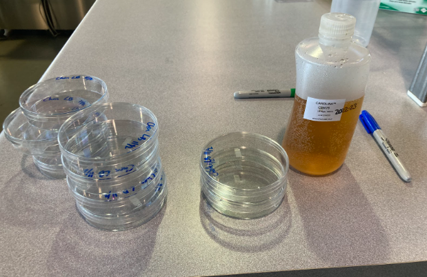
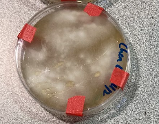
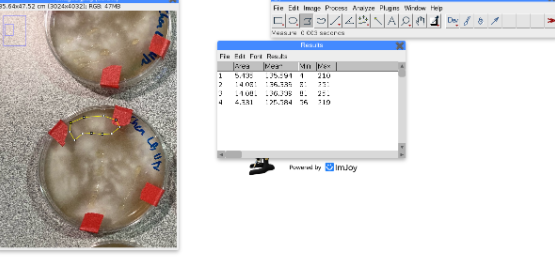

Procedure
From start to finish
Step 1
|
Obtain Materials:
- 10x 100mm Petri Dishes
- Luria-Bertani agar (LB agar)
- Tube of Pseudomonas Fluorescens
- Tube of F. Oxysporum
- Tape
- 15x innoculating loops
- ImageJ online software
|
 |
Step 2
|
Set up the experiment:
- Pour the LB agar into each of the petri dishes and let it dry
- Import the F. Oxysporum using innoculating loops
- Wait 3 days
- Import the Pseudomonas Fluorescens using innoculating loops
- Seal the agar plate using tape
|
 |
Step 3
|
Collect and Analyze Data
- Take pictures of each of the agar dishes
- Import images into ImageJ software
- Use the polygon tool to find the funcal colony areas
- Find the average of the colony areas
- Repeat this every 7 days for 4 weeks
|
 |